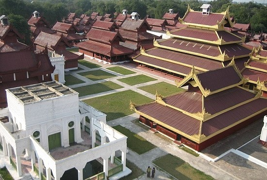
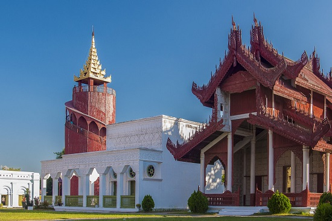
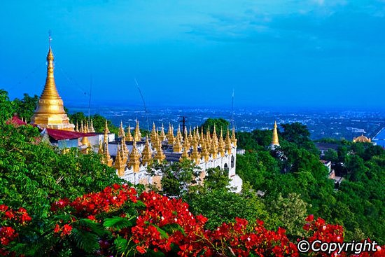
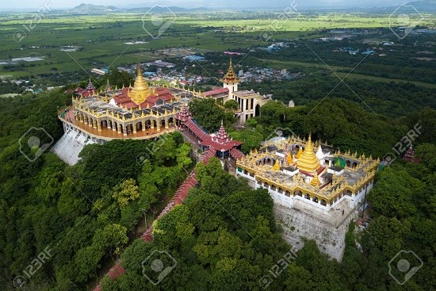
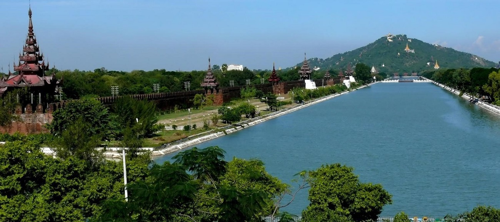

The Beautiful and Famous Places to Visit in Mandalay City
Mandalay Palace: For The Most Beautiful Views
 This is one of the best places to visit in Myanmar. The palace consists of a watchtower which you can climb and soak in the beautiful views of the city it offers. The most compelling thing about this palace is a pyramid which is made of gilt filigree built above the main throne of the palace. This is one of the important places to visit in Myanmar. Suggested Read: Nature Travel At Its Finest: Our Romantic Trip To Seychelles Was A Delight!
U Pein Bridge |
U Pein Bridge is a crossing that spans the Taungthaman Lake near Amarapura in Myanmar. The 1.2-kilometre (0.75 mi) bridge was built around 1850 and is believed to be the oldest and (once) longest teakwood bridge in the world.[1][2][3] Construction began when the capital of Ava Kingdom moved to Amarapura,[4] and the bridge is named after the mayor who had it built.[5] It is used as an important passageway for the local people and has also become a tourist attraction and therefore a significant source of income for souvenir sellers.[1][5][6][7] It is particularly busy during July and August when the lake is at its highest.[8] The bridge was built from wood reclaimed from the former royal palace in Inwa. It features 1,086 pillars that stretch out of the water, some of which have been replaced with concrete. Though the bridge largely remains intact, there are fears that an increasing number of the pillars are becoming dangerously decayed. Some have become entirely detached from their bases and only remain in place because of the lateral bars holding them together. Damage to these supports have been caused by flooding as well as a fish breeding program introduced into the lake which has caused the water to become stagnant. |
Landscapes around Mandalay Hill
Mandalay Hill (Burmese: မန္တလေးတောင်; MLCTS: manta. le: taung [màɰ̃dəlé tàʊɰ̃]) is a 240 metres (790 ft) hill that is located to the northeast of the city centre of Mandalay in Myanmar. The city took its name from the hill. Mandalay Hill is known for its abundance of pagodas and monasteries, and has been a major pilgrimage site for Burmese Buddhists for nearly two centuries. At the top of the hill is the Sutaungpyei (literally wish-fulfilling) Pagoda. A panoramic view of Mandalay from the top of Mandalay Hill alone makes it worthwhile to attempt a climb up its stairways. There are four covered stairways called saungdan leading up the hill from the south, southeast, west and north, and convenient seats of masonry work line these stairways all the way up. A one-way motor road today saves time and also makes it accessible for those who are unable to climb up the stairs, leading to an escalator and a lift to the pagoda at the summit.
  